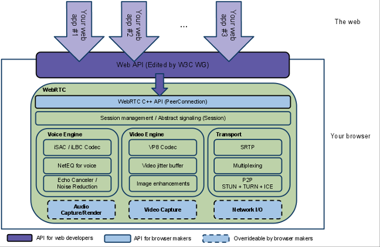

WebRTC 概论¶
WebRTC 简介¶
一句话，WebRTC 用浏览器来进行实时通信的一套基于 Web 进行实时通信的标准和参考实现, 它也是一个开源项目，最初由 google 发起并交由开源社区，各大浏览器厂商在其各自的产品中亦有部分的采用。
借助WebRTC，你可以在基于开放标准的应用程序中添加实时通信功能。 它支持在节点之间发送视频，语音和通用数据，从而使开发人员能够构建功能强大的语音和视频通信解决方案。 该技术可在所有现代浏览器以及所有主要平台的本机客户端上使用。
WebRTC背后的技术被实现为一个开放的Web标准，并在所有主要浏览器中均以常规JavaScript API的形式提供。 对于本机客户端（例如Android和iOS应用程序），可以使用提供相同功能的库。
什么是 WebRTC?¶
WebRTC 意味着两个东西：
它是一套浏览器的实时通信规范，包括：
网络实时通讯标准
W3C 和 IETF 正在标准化的规范
通过简单的 JavaScript API 启用Web 浏览器中的音频、视频和屏幕共享功能
无需安装
可以做点对点通讯，也可以用于音视频会议
具有与现有语音和视频系统的互操作性
这也是一个开源项目，包括：
最初由 Google 贡献
由 C++ 实现，可跨平台
代码很多来自于 Google 对 Global IP Solutions 的收购
大多数新视频公司都是基于这个项目
WebRTC 是一个开放的网络框架，可在浏览器中启用实时通信，包括如下功能
媒体设备的访问 MediaDevices
媒体流的捕获 Media Stream Capture
对等连接 Peer connection
本地和远程媒体流 Local and Remote Stream
数据通道 Data Channel
中转服务器 Turn Server
多媒体通信相关的技术¶
音频: 回声消除 Echo Cancellation, 静音检测 Silence Detection, 噪声消除 Noise Removal, G.711 及 Opus 等编码，防抖动缓冲等
视频: H264, VP8 等视频编码的支持， 防抖动缓冲
传输: 基于 RTP, RTCP， SRTP 和 DTLS 的实时传输和多路利用
信令: 基于 SDP 和 SIP, Jingle, ROAP, RESTful 等协议的多媒体媒体通信参数协商
网络 - 通过 ICE, TURN, STUN 的 NAT 穿透与连接
三个主要的 JS APIs¶
媒体流 MediaStream
对等连接 RTCPeerConnection
数据通道 RTCDataChannel
WebRTC 应用的核心功能¶
用户管理 User management
会话管理 Session management
信令管理 Signal management
连接管理 Connection management
设备管理 Device management
媒体流管理 Media Stream/Track management
媒体统计和度量 Media statistics and metrics